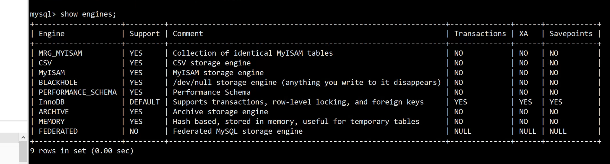
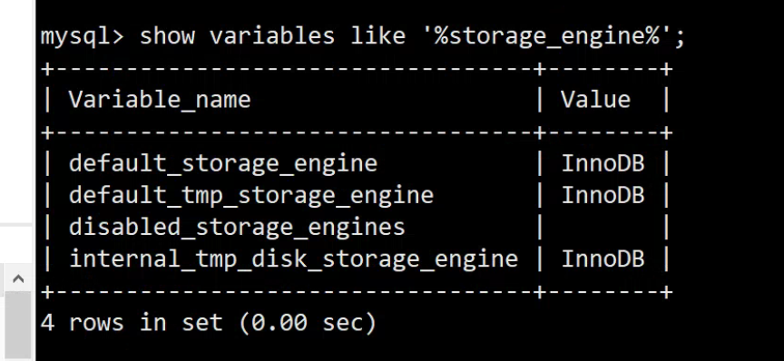
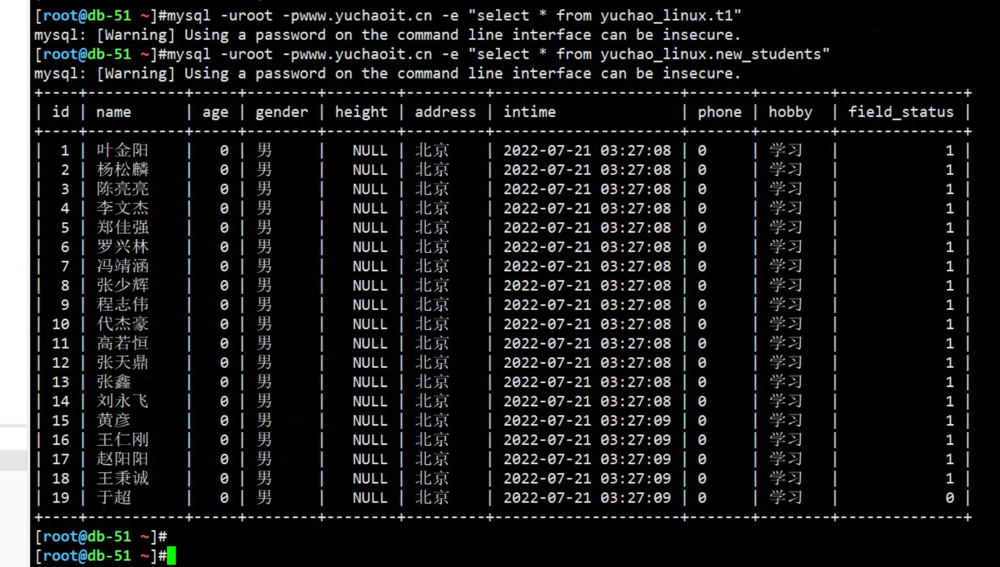
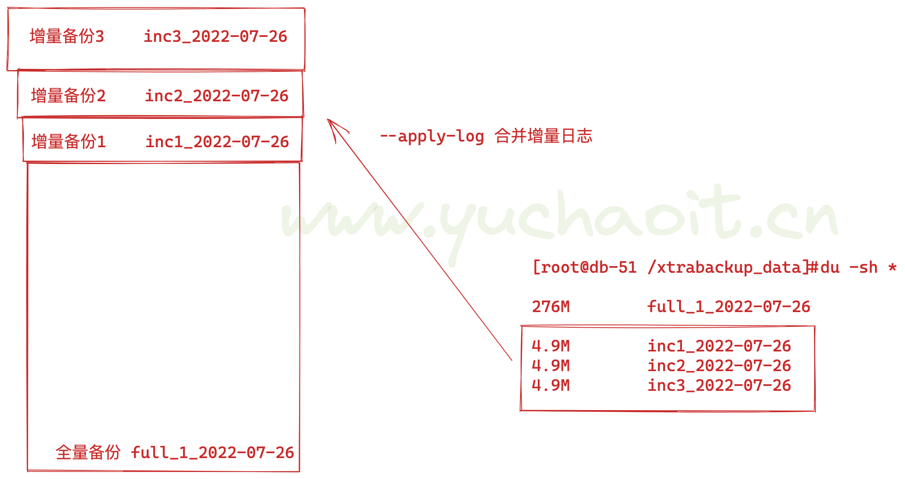
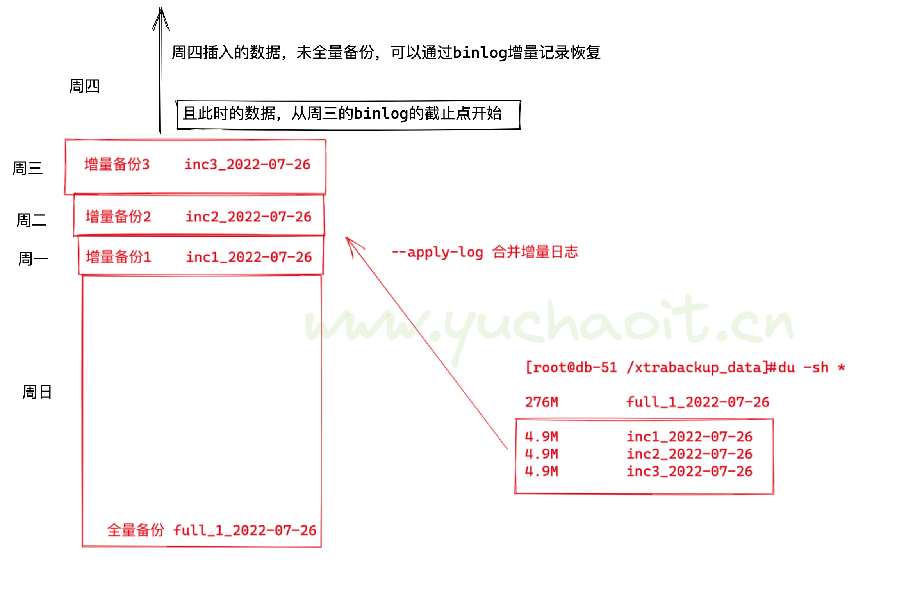

02-8-xtrabackup备份工具
为什么要学这个工具
背景
一个合格的运维工程师或者dba工程师，如果有从事数据库方面的话，首先需要做的就是备份，如果没有备份，出现问题的话，你的业务就会出问题，你的工作甚至会。。。
所以备份是重要的，但光有备份还不行，备份后如果出现问题，你还得使用备份数据来恢复，但恢复数据的时间一般都是很长的，不符合业务需求，所以一个快速备份与恢复的软件就很有必要。
就像前文给大家看的微盟数据库被删。。最后是腾讯云的工程师协助进行数据恢复
xtrabackup工具
Percona-xtrabackup是 Percona公司开发的一个用于MySQL数据库物理热备的备份工具，支持MySQL、Percona server和MariaDB，开源免费，是目前较为受欢迎的主流备份工具。
xtrabackup只能备份innoDB和xtraDB两种数据引擎的表，而不能备份MyISAM数据表。
特点
- 物理备份工具，拷贝数据文件
- 备份和恢复数据的速度非常快，安全可靠
- 在备份期间执行的事务不会间断，备份
innodb数据不影响业务 - 备份期间不增加太多数据库的性能压力
- 支持对备份的数据自动校验
- 运行全量，增量，压缩备份及流备份
- 支持在线迁移表以及快速创建新的从库
- 运行几乎所有版本的
mysql和maridb
数据文件扩展名
| .idb文件 | 以独立表空间存储的InnoDB引擎类型的数据文件扩展名 |
|---|---|
| .ibdata文件 | 以共享表空间存储的InnoDB引擎类型的数据文件扩展名 |
| .frm文件 | 存放于表相关的元数据(meta)信息及表结构的定义信息 |
| .MYD文件 | 存放MyISAM引擎表的数据文件扩展名 |
| .MYI文件 | 存放MyISAM引擎表的索引信息文件扩展名 |
[root@db-51 ~]#ls -l /www.yuchaoit.cn/mysql_3306/world/
total 1016
-rw-r----- 1 mysql mysql 8710 Feb 24 15:09 city.frm
-rw-r----- 1 mysql mysql 606208 Feb 24 15:09 city.ibd
-rw-r----- 1 mysql mysql 9172 Feb 24 15:09 country.frm
-rw-r----- 1 mysql mysql 163840 Feb 24 15:09 country.ibd
-rw-r----- 1 mysql mysql 8702 Feb 24 15:09 countrylanguage.frm
-rw-r----- 1 mysql mysql 229376 Feb 24 15:09 countrylanguage.ibd
-rw-r----- 1 mysql mysql 67 Jul 21 2022 db.opt
事务型引擎的ACID特性
目前为止，我们还未学习mysql的引擎，会在后面讲解，大家先了解下对于mysql的引擎是InnoDB
数据库引擎，就像是摩托车的发动机，有各种品牌的发动机
有了发动机，我们可以将摩托车跑起来，且无序关心它是怎么制造动力的
对于数据库的引擎，就是开发人员写好的一种程序，能够让运维不用关心数据是如何增删改查到磁盘上的，通过SQL语句，就可以数据。
因此数据库引擎就是一个用于存储、处理、保护数据的程序。
mysql支持如下图中的几种引擎

当前数据库是哪一款引擎

1.安装Xtrabackup工具
# 配置好阿里云源，安装基础依赖包
yum install perl perl-devel libaio libaio-devel perl-Time-HiRes perl-DBD-MySQL -y
# 下载软件且安装
wget https://www.percona.com/downloads/XtraBackup/Percona-XtraBackup-2.4.9/binary/redhat/7/x86_64/percona-xtrabackup-24-2.4.9-1.el7.x86_64.rpm
yum localinstall percona-xtrabackup-24-2.4.9-1.el7.x86_64.rpm -y
# 检查软件
[root@db-51 ~]#ls -l `which xtrabackup innobackupex`
lrwxrwxrwx 1 root root 10 Feb 26 09:27 /usr/bin/innobackupex -> xtrabackup
-rwxr-xr-x 1 root root 21659096 Nov 23 2017 /usr/bin/xtrabackup
2.命令介绍
Xtrabackup中主要包含两个工具：
xtrabackup：是用于热备innodb，xtradb表中数据的工具，不能备份其他类型的表，也不能备份数据表结构；
innobackupex：是将xtrabackup进行封装的perl脚本，提供了备份myisam表的能力。
常用选项:
--host 指定主机
--user 指定用户名
--password 指定密码
--port 指定端口
--databases 指定数据库
--incremental 创建增量备份
--incremental-basedir 指定包含完全备份的目录
--incremental-dir 指定包含增量备份的目录
--apply-log 对备份进行预处理操作
一般情况下，在备份完成后，数据尚且不能用于恢复操作，因为备份的数据中可能会包含尚未提交的事务或已经提交但尚未同步至数据文件中的事务。
因此，此时数据文件仍处理不一致状态。“准备”的主要作用正是通过回滚未提交的事务及同步已经提交的事务至数据文件也使得数据文件处于一致性状态。
--redo-only 不回滚未提交事务
--copy-back 恢复备份目录
Xtrabackup命令是专门用于对InnoDB和XtraDB等事务引擎的数据库热备份的工具，不能用于备份MyISAM等其他类型的引擎数据，其主要特点是备份数据时完全不用锁表。
Innobackupex命令是将上述Xtrabackup命令使用perl脚本进行二次封装的工具，除了可以用于InnoDB和XtraDB等引擎之外，还可以备份MyISAM及多种引擎混合使用的场景，该命令的主要特点是备份事务引擎数据而不用锁表，可以备份非事务引擎数据，但要锁表。
DBA用的最多的是Innobackupex命令备份恢复
1.该工具用于拷贝mysql的数据目录
2. 基于InnoDB的引擎，可以实现热备，备份期间数据库读写可以正常进行，不停机备份。
2. 非InnoDB的引擎，会先进行全局锁表，禁止数据写入
3.数据库全备
1.修改mysql客户端配置文件
[root@db-51 ~]#
[root@db-51 ~]#cat /etc/my.cnf
[mysqld]
gtid-mode=ON
enforce-gtid-consistency=true
log-slave-updates=ON
server_id=51
log_bin=/www.yuchaoit.cn/mysql_3306/logs/mysql-bin
character_set_server=utf8mb4
port=3306
user=mysql
basedir=/opt/mysql
datadir=/www.yuchaoit.cn/mysql_3306
socket=/tmp/mysql.sock
[mysql]
socket=/tmp/mysql.sock
[root@db-51 ~]#
2.全备命令
innobackupex --user=root -S /tmp/mysql.sock --password=www.yuchaoit.cn /xtrabackup_data/
备份结果
220726 16:16:25 [00] Writing /xtrabackup_data/2022-07-26_16-16-23/xtrabackup_info
220726 16:16:25 [00] ...done
xtrabackup: Transaction log of lsn (882272378) to (882272387) was copied.
220726 16:16:25 completed OK!
查看数据
[root@db-51 ~]#ll /xtrabackup_data/
total 4
drwxr-x--- 18 root root 4096 Jul 26 16:16 2022-07-26_16-16-23
[root@db-51 ~]#ll /xtrabackup_data/2022-07-26_16-16-23/
total 77892
-rw-r----- 1 root root 425 Jul 26 16:16 backup-my.cnf
drwxr-x--- 2 root root 60 Jul 26 16:16 chaoge_linux
drwxr-x--- 2 root root 332 Jul 26 16:16 employees
drwxr-x--- 2 root root 48 Jul 26 16:16 gtid_db
-rw-r----- 1 root root 12966 Jul 26 16:16 ib_buffer_pool
-rw-r----- 1 root root 79691776 Jul 26 16:16 ibdata1
drwxr-x--- 2 root root 4096 Jul 26 16:16 jpress
drwxr-x--- 2 root root 20 Jul 26 16:16 kings
drwxr-x--- 2 root root 20 Jul 26 16:16 kings_linux
drwxr-x--- 2 root root 84 Jul 26 16:16 linux0224
drwxr-x--- 2 root root 88 Jul 26 16:16 lol
drwxr-x--- 2 root root 4096 Jul 26 16:16 mysql
drwxr-x--- 2 root root 8192 Jul 26 16:16 performance_schema
drwxr-x--- 2 root root 8192 Jul 26 16:16 sys
drwxr-x--- 2 root root 144 Jul 26 16:16 world
-rw-r----- 1 root root 63 Jul 26 16:16 xtrabackup_binlog_info
-rw-r----- 1 root root 117 Jul 26 16:16 xtrabackup_checkpoints
-rw-r----- 1 root root 563 Jul 26 16:16 xtrabackup_info
-rw-r----- 1 root root 2560 Jul 26 16:16 xtrabackup_logfile
drwxr-x--- 2 root root 76 Jul 26 16:16 yc_linux
drwxr-x--- 2 root root 20 Jul 26 16:16 yuanlai
drwxr-x--- 2 root root 20 Jul 26 16:16 yuchaoit_mysql
drwxr-x--- 2 root root 96 Jul 26 16:16 yuchao_linux
整个备份内容
停止日志监控
停止锁表
备份成功
以及备份的内容是
1. 配置文件的备份 backup-my.cnf
2. 各个数据库的备份
3. mysql服务器当前正在使用的二进制日志文件和此时二进制日志时间的位置信息文件
xtrabackup_binlog_info
4. xtrabackup_checkpoints 备份的类型，LSN状态
5. 备份总体的日志 xtrabackup_info
6. 备份期间的事务日志 xtrabackup_logfile
查看备份的各种日志文件
[root@db-51 ~]#cat /xtrabackup_data/2022-07-26_16-16-23/xtrabackup_binlog_info
mysql-bin.000002 194 ae068f82-06bc-11ed-839d-000c29b76f3a:1-81
也就等于服务端的binlog日志
mysql> show master status;
[root@db-51 ~]#cat /xtrabackup_data/2022-07-26_16-16-23/xtrabackup_checkpoints
backup_type = full-backuped # 全量备份
from_lsn = 0
to_lsn = 882272378
last_lsn = 882272387
compact = 0
recover_binlog_info = 0
关闭全量备份的时间戳
innobackupex --no-timestamp --user=root -S /tmp/mysql.sock --password=www.yuchaoit.cn /xtrabackup_data/full_`date +%F`
[root@db-51 /www.yuchaoit.cn/mysql_3306]#ls /xtrabackup_data/
2022-07-26_16-16-23 full_2022-07-26
3.全备数据恢复
# 模拟数据删除，可以直接操作mysql数据目录
# 停止
[root@db-51 ~]#systemctl stop mysqld
[root@db-51 ~]#netstat -tunlp |grep 3306
# 挪走数据
[root@db-51 ~]#mv /www.yuchaoit.cn/mysql_3306/* /test_3306_data/
恢复方案，有俩
xtraback命令恢复
在恢复数据之前，先执行如下命令，确保数据一致性，同时回滚未提交事务的日志数据
使用32M内存进行恢复，对内存限制，防止占用过多机器资源
--apply-log 读取redo日志
# 基于命令恢复，步骤1
innobackupex --apply-log --use-memory=32M /xtrabackup_data/full_2022-07-26/
# 步骤2，copy-back命令恢复
innobackupex --defaults-file=/etc/my.cnf --copy-back --rsync /xtrabackup_data/full_2022-07-26/
# 步骤3，检查数据目录
[root@db-51 ~]#ls /www.yuchaoit.cn/mysql_3306/
# 步骤4，启动服务
注意权限的恢复
[root@db-51 ~]#chown -R mysql.mysql /www.yuchaoit.cn/mysql_3306/
[root@db-51 ~]#systemctl start mysqld
的确数据都可以正常查看了

mv恢复
# 或者直接mv 将数据移动回mysql的目录，和xtrabackup命令本质上一样的，都是直接复制物理文件
# 肯定不如xtraback恢复，来的可靠性强
mv /test_3306_data/* /www.yuchaoit.cn/mysql_3306/
4.增量备份
增量备份之前，仍然是要进行一次全量备份
后续的增量备份，就是依次增加增量的数据
xtraback自带的备份工具
- 逻辑是每次增量备份，以最近一次备份作为参照物；
- 恢复数据时，把所有的增量合并到full数据。
- 必须得有全备，结合增量备份。
4.1 增量备份演练
完成演练目标
周日full + 周一inc1 + 周二inc2 + 周三 inc3 ）
1.备份前数据准备
[root@db-51 ~]#mysql -uroot -pwww.yuchaoit.cn
mysql: [Warning] Using a password on the command line interface can be insecure.
Welcome to the MySQL monitor. Commands end with ; or \g.
Your MySQL connection id is 10
Server version: 5.7.28-log MySQL Community Server (GPL)
Copyright (c) 2000, 2019, Oracle and/or its affiliates. All rights reserved.
Oracle is a registered trademark of Oracle Corporation and/or its
affiliates. Other names may be trademarks of their respective
owners.
Type 'help;' or '\h' for help. Type '\c' to clear the current input statement.
mysql> create database xtraback_test charset utf8mb4;
Query OK, 1 row affected (0.00 sec)
mysql> use xtraback_test;
Database changed
mysql> create table full_t1(id int);
Query OK, 0 rows affected (0.00 sec)
mysql> insert into full_t1 values(1),(2),(3);
Query OK, 3 rows affected (0.00 sec)
Records: 3 Duplicates: 0 Warnings: 0
mysql> commit ;
Query OK, 0 rows affected (0.00 sec)
mysql>
2.模拟周日夜里11点全量备份
# 也就是进行第一次全量备份的执行
innobackupex --no-timestamp --user=root -S /tmp/mysql.sock --password=www.yuchaoit.cn /xtrabackup_data/full_1_`date +%F`
3.模拟周一开始数据变化了
# 用户在网页中插入数据了，也是我们在全量备份之后的第一次数据写入，会被binlog记录，实现增量日志
[root@db-51 ~]#mysql -uroot -pwww.yuchaoit.cn
mysql: [Warning] Using a password on the command line interface can be insecure.
Welcome to the MySQL monitor. Commands end with ; or \g.
Your MySQL connection id is 13
Server version: 5.7.28-log MySQL Community Server (GPL)
Copyright (c) 2000, 2019, Oracle and/or its affiliates. All rights reserved.
Oracle is a registered trademark of Oracle Corporation and/or its
affiliates. Other names may be trademarks of their respective
owners.
Type 'help;' or '\h' for help. Type '\c' to clear the current input statement.
mysql> use xtraback_test;
Reading table information for completion of table and column names
You can turn off this feature to get a quicker startup with -A
Database changed
mysql>
mysql> create table inc_t1(id int);
Query OK, 0 rows affected (0.01 sec)
mysql> insert into inc_t1 values(1),(2),(3);
Query OK, 3 rows affected (0.00 sec)
Records: 3 Duplicates: 0 Warnings: 0
mysql> commit;
Query OK, 0 rows affected (0.00 sec)
mysql>
4.模拟周一夜里11点增量备份
单词increment，增量的意思
第一次增量备份，需要2个参数
--incremental-basedir= # 填入上一次全量备份的目录
--incremental # 填入增量备份的目录
[root@db-51 ~]#innobackupex --defaults-file=/etc/my.cnf --user=root --password=www.yuchaoit.cn --socket=/tmp/mysql.sock --no-timestamp --incremental-basedir=/xtrabackup_data/full_1_2022-07-26/ --incremental /xtrabackup_data/inc1_`date +%F`
正确备份的结果
220726 17:10:31 [00] Writing /xtrabackup_data/inc1_2022-07-26/backup-my.cnf
220726 17:10:31 [00] ...done
220726 17:10:31 [00] Writing /xtrabackup_data/inc1_2022-07-26/xtrabackup_info
220726 17:10:31 [00] ...done
xtrabackup: Transaction log of lsn (882272808) to (882272808) was copied.
220726 17:10:31 completed OK!
检查数据目录
[root@db-51 ~]#ls /xtrabackup_data/
2022-07-26_16-16-23 full_1_2022-07-26 full_2022-07-26 inc1_2022-07-26
对于增量备份的数据，是
从全备信息的的LSN开始读取redo日志，对改变的数据进行增量备份
5.模拟周二白天继续数据写入，增量写入
[root@db-51 ~]#mysql -uroot -pwww.yuchaoit.cn
mysql: [Warning] Using a password on the command line interface can be insecure.
Welcome to the MySQL monitor. Commands end with ; or \g.
Your MySQL connection id is 20
Server version: 5.7.28-log MySQL Community Server (GPL)
Copyright (c) 2000, 2019, Oracle and/or its affiliates. All rights reserved.
Oracle is a registered trademark of Oracle Corporation and/or its
affiliates. Other names may be trademarks of their respective
owners.
Type 'help;' or '\h' for help. Type '\c' to clear the current input statement.
mysql> use xtraback_test;
Reading table information for completion of table and column names
You can turn off this feature to get a quicker startup with -A
Database changed
mysql> create table inc_t2(id int);
Query OK, 0 rows affected (0.01 sec)
mysql> insert into inc_t2 values(1),(2),(3);
Query OK, 3 rows affected (0.00 sec)
Records: 3 Duplicates: 0 Warnings: 0
mysql> commit;
Query OK, 0 rows affected (0.00 sec)
6.模拟周二夜里11点增量备份
开始第二次增量备份
注意，这里使用上一次增量备份的目录，而不是全量备份了
--parallel=3 开启3个线程备份，当数据量较大时候，根据CPU核数决定最大化参数
innobackupex --defaults-file=/etc/my.cnf --user=root --password=www.yuchaoit.cn --socket=/tmp/mysql.sock --no-timestamp --parallel=4 --incremental-basedir=/xtrabackup_data/inc1_2022-07-26 --incremental /xtrabackup_data/inc2_`date +%F`
查看数据备份
[root@db-51 ~]#ls /xtrabackup_data/
2022-07-26_16-16-23 full_1_2022-07-26 full_2022-07-26 inc1_2022-07-26 inc2_2022-07-26
一定看清楚超哥的命令，以及对应的参数目录
至此，就完成了一次全量备份，以及后两次的增量备份。
7.模拟周三白天数据变化
[root@db-51 ~]#mysql -uroot -pwww.yuchaoit.cn
mysql: [Warning] Using a password on the command line interface can be insecure.
Welcome to the MySQL monitor. Commands end with ; or \g.
Your MySQL connection id is 23
Server version: 5.7.28-log MySQL Community Server (GPL)
Copyright (c) 2000, 2019, Oracle and/or its affiliates. All rights reserved.
Oracle is a registered trademark of Oracle Corporation and/or its
affiliates. Other names may be trademarks of their respective
owners.
Type 'help;' or '\h' for help. Type '\c' to clear the current input statement.
mysql> use xtraback_test;
Reading table information for completion of table and column names
You can turn off this feature to get a quicker startup with -A
Database changed
mysql> create table inc_t3(id int);
Query OK, 0 rows affected (0.01 sec)
mysql> insert into inc_t3 values(1),(2),(3);
Query OK, 3 rows affected (0.00 sec)
Records: 3 Duplicates: 0 Warnings: 0
mysql> commit;
Query OK, 0 rows affected (0.00 sec)
8.模拟周三夜里11点增量备份
innobackupex --defaults-file=/etc/my.cnf --user=root --password=www.yuchaoit.cn --socket=/tmp/mysql.sock --no-timestamp --parallel=4 --incremental-basedir=/xtrabackup_data/inc2_2022-07-26 --incremental /xtrabackup_data/inc3_`date +%F`
检查备份
[root@db-51 ~]#ls /xtrabackup_data/
2022-07-26_16-16-23 full_1_2022-07-26 full_2022-07-26 inc1_2022-07-26 inc2_2022-07-26 inc3_2022-07-26
[root@db-51 /xtrabackup_data]#du -sh *
276M 2022-07-26_16-16-23
276M full_1_2022-07-26
392M full_2022-07-26
4.9M inc1_2022-07-26
4.9M inc2_2022-07-26
4.9M inc3_2022-07-26
9.模拟周四数据写入
[root@db-51 /xtrabackup_data]#mysql -uroot -pwww.yuchaoit.cn
mysql: [Warning] Using a password on the command line interface can be insecure.
Welcome to the MySQL monitor. Commands end with ; or \g.
Your MySQL connection id is 26
Server version: 5.7.28-log MySQL Community Server (GPL)
Copyright (c) 2000, 2019, Oracle and/or its affiliates. All rights reserved.
Oracle is a registered trademark of Oracle Corporation and/or its
affiliates. Other names may be trademarks of their respective
owners.
Type 'help;' or '\h' for help. Type '\c' to clear the current input statement.
mysql> use xtraback_test;
Reading table information for completion of table and column names
You can turn off this feature to get a quicker startup with -A
Database changed
mysql> create table inc_t4(id int);
Query OK, 0 rows affected (0.00 sec)
mysql> insert into inc_t4 values(1),(2),(3);
Query OK, 3 rows affected (0.00 sec)
Records: 3 Duplicates: 0 Warnings: 0
mysql> commit ;
Query OK, 0 rows affected (0.00 sec)
mysql>
10.模拟周四数据数据误删除，如何恢复
# 周四今天，还未进行备份，数据库就出问题了
[root@db-51 /xtrabackup_data]#pkill mysqld
[root@db-51 /xtrabackup_data]#
[root@db-51 /xtrabackup_data]#
[root@db-51 /xtrabackup_data]#netstat -tunlp
Active Internet connections (only servers)
Proto Recv-Q Send-Q Local Address Foreign Address State PID/Program name
tcp 0 0 0.0.0.0:10050 0.0.0.0:* LISTEN 1024/zabbix_agentd
tcp 0 0 0.0.0.0:22 0.0.0.0:* LISTEN 1011/sshd
tcp6 0 0 :::10050 :::* LISTEN 1024/zabbix_agentd
tcp6 0 0 :::22 :::* LISTEN 1011/sshd
tcp6 0 0 :::8090 :::* LISTEN 19708/java
# 删除数据，全部mv移走即可，rm也行
[root@db-51 /xtrabackup_data]#mv /www.yuchaoit.cn/mysql_3306/* /test_3306_data/
4.2 恢复思路
1.想清楚你目前有哪些备份的数据
[root@db-51 /xtrabackup_data]#ls /xtrabackup_data/ -l
total 24
drwxr-x--- 18 root root 4096 Jul 26 16:16 2022-07-26_16-16-23
drwxr-x--- 20 root root 4096 Jul 26 16:59 full_1_2022-07-26 # 有这个全量备份的binlog
drwxr-x--- 19 root root 4096 Jul 26 16:39 full_2022-07-26
drwxr-x--- 20 root root 4096 Jul 26 17:10 inc1_2022-07-26 # 增量1的binlog
drwxr-x--- 20 root root 4096 Jul 26 17:31 inc2_2022-07-26 # 增量2的binlog
drwxr-x--- 20 root root 4096 Jul 26 17:39 inc3_2022-07-26 # 增量3 的binlog
2. 恢复思路
- 先恢复全量备份
- 依次合并增量的日志到全备日志里
- 最终利用--copy-back参数 恢复 完整的所有日志
- 恢复周四的增量数据
- 完成所有数据恢复
3.提醒，这里要实现增量备份，务必保存好之前的binlog，修改配置文件，修改binlog的存储路径
4.3 图解恢复
[root@db-51 /xtrabackup_data]#du -sh *
276M 2022-07-26_16-16-23
276M full_1_2022-07-26
392M full_2022-07-26
4.9M inc1_2022-07-26
4.9M inc2_2022-07-26
4.9M inc3_2022-07-26

合并参数注意
--apply-log：该选项表示同xtrabackup的--prepare参数
一般情况下,在备份完成后，数据尚且不能用于恢复操作，因为备份的数据中可能会包含尚未提交的事务或已经提交但尚未同步至数据文件中的事务。
因此，此时数据 文件仍处理不一致状态。
--apply-log
作用是通过回滚未提交的事务及同步已经提交的事务至数据文件使数据文件处于一致性状态。
注意，只要不是最后一次合并增量数据，就要加--redo-only参数，作用是只应用redo日志恢复数据，不执行undo回滚未提交的数据。
1.先处理full数据
innobackupex --apply-log --redo-only /xtrabackup_data/full_1_2022-07-26/
2.合并inc_1到full
[root@db-51 ~]#cd /xtrabackup_data/
innobackupex --apply-log --redo-only --incremental-dir=inc1_2022-07-26 full_1_2022-07-26/
合并完毕后，检查结果
[root@db-51 /xtrabackup_data]#cat full_1_2022-07-26/xtrabackup_checkpoints |grep 'to_lsn'
to_lsn = 882272808
[root@db-51 /xtrabackup_data]#cat inc1_2022-07-26/xtrabackup_checkpoints |grep 'to_lsn'
to_lsn = 882272808
3.inc_2合并到full
innobackupex --apply-log --redo-only --incremental-dir=inc2_2022-07-26 full_1_2022-07-26/
4.inc_3合并到full
innobackupex --apply-log --redo-only --incremental-dir=inc3_2022-07-26 full_1_2022-07-26/
5.对最终的full数据进行一致性校验检查
innobackupex --apply-log full_1_2022-07-26/
整个流程，都得看到结尾的
InnoDB: Starting shutdown...
InnoDB: Shutdown completed; log sequence number 882273339
220726 18:38:35 completed OK!
6.恢复数据且启动数据库
# 确认数据库还是宕机 的状态
[root@db-51 ~]#netstat -tunlp
Active Internet connections (only servers)
Proto Recv-Q Send-Q Local Address Foreign Address State PID/Program name
tcp 0 0 0.0.0.0:10050 0.0.0.0:* LISTEN 1024/zabbix_agentd
tcp 0 0 0.0.0.0:22 0.0.0.0:* LISTEN 1011/sshd
tcp6 0 0 :::10050 :::* LISTEN 1024/zabbix_agentd
tcp6 0 0 :::22 :::* LISTEN 1011/sshd
tcp6 0 0 :::8090 :::* LISTEN 19708/java
[root@db-51 ~]#
[root@db-51 ~]#
[root@db-51 ~]#
[root@db-51 ~]#
[root@db-51 ~]#ls /www.yuchaoit.cn/mysql_3306/
# 恢复数据
[root@db-51 ~]#innobackupex --copy-back /xtrabackup_data/full_1_2022-07-26/
[root@db-51 ~]#du -sh /www.yuchaoit.cn/mysql_3306/
384M /www.yuchaoit.cn/mysql_3306/
# 根据my.cnf的设置，还得创建数据库
[root@db-51 ~]#mkdir /www.yuchaoit.cn/mysql_3306/logs -p
[root@db-51 ~]#touch /www.yuchaoit.cn/mysql_3306/logs/mysql.err
[root@db-51 ~]#chown -R mysql.mysql /www.yuchaoit.cn/
# 重启
[root@db-51 ~]#systemctl restart mysqld
[root@db-51 ~]#!net
netstat -tunlp
Active Internet connections (only servers)
Proto Recv-Q Send-Q Local Address Foreign Address State PID/Program name
tcp 0 0 0.0.0.0:10050 0.0.0.0:* LISTEN 1024/zabbix_agentd
tcp 0 0 0.0.0.0:22 0.0.0.0:* LISTEN 1011/sshd
tcp6 0 0 :::10050 :::* LISTEN 1024/zabbix_agentd
tcp6 0 0 :::3306 :::* LISTEN 31694/mysqld
tcp6 0 0 :::22 :::* LISTEN 1011/sshd
tcp6 0 0 :::8090 :::* LISTEN 19708/java
[root@db-51 ~]#
7.登录数据库，查看数据情况
目前只还原了全量+inc_1 + inc_2 + inc_3 的数据
mysql> show tables from xtraback_test;
+-------------------------+
| Tables_in_xtraback_test |
+-------------------------+
| full_t1 |
| inc_t1 |
| inc_t2 |
| inc_t3 |
+-------------------------+
4 rows in set (0.00 sec)
mysql>
8.恢复周四的增量写入
前提是，你在删库前的binlog还存在，如果说binlog和数据目录在一起，都被删除的话，binlog丢失了，也无法恢复数据了！！！
# 删除数据，全部mv移走即可，rm也行
[root@db-51 /xtrabackup_data]#mv /www.yuchaoit.cn/mysql_3306/* /test_3306_data/
# 因此还好我们这里有binlog备份，或者你开始就应该让binlog数据，放在其他目录管理，或者做好备份工作，一切为了数据安全。
恢复思路图解

1. 找到inc_3日志的截止点,作为起点
[root@db-51 ~]#cat /xtrabackup_data/inc3_2022-07-26/xtrabackup_binlog_info
mysql-bin.000003 2274 ae068f82-06bc-11ed-839d-000c29b76f3a:1-90
2.查看之前的binlog，也就是找到t4表的binlog记录，可以看到t4表的数据插入
[root@db-51 /test_3306_data/logs]#mysqlbinlog --base64-output=decode-rows -vv mysql-bin.000001
3. 日志截取, 从inc3的开始，然后提取binlog，就只拿到t4表的数据创建了！！！
mysqlbinlog --skip-gtids --start-position=2274 /test_3306_data/logs/mysql-bin.000003 > /tmp/t4.sql
4.此时的sql文件，就是从inc3增量备份后，次日数据写入的binlog记录了！！可以恢复了！！
恢复t4数据
mysql> set sql_log_bin=0;
Query OK, 0 rows affected (0.00 sec)
mysql> source /tmp/t4.sql;
mysql> set sql_log_bin=1;
确认inc_t4表数据也回来了
mysql> select * from xtraback_test.inc_t4;
+------+
| id |
+------+
| 1 |
| 2 |
| 3 |
+------+
3 rows in set (0.00 sec)
立即再做一次全量备份
1. 清空所有日志
mysql> reset master;
Query OK, 0 rows affected (0.00 sec)
2.立即全量备份
innobackupex --no-timestamp --user=root -S /tmp/mysql.sock --password=www.yuchaoit.cn /xtrabackup_data/full_all_bak_`date +%F`